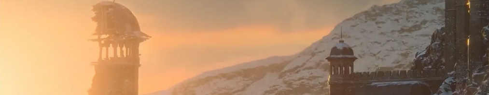

Home
Geralt
Yennefer
Ciri
Rittersporn
Kaer Morhen
Kaer Morhen
Beschreibung
Kaer Morhen ist die alte Feste der Hexer, in der die Hexer ausgebildet wurden. Diese Bezeichnung ist eine Abwandlung der Originalbezeichnung "Caer a'Muirehen" aus der Alten Sprache, was so viel wie "Die Festung Vom Alten Meer"(EE, 205) bedeutet. Die Hexer-Festung liegt in den Bergen des Königreiches Kaedwen.

In der Geralt-Saga
In alten Zeiten wurden die Hexer hier ausgebildet und unterzogen sich der Mutation, daher nannte sich die Einrichtung auch "Wolfsschule", denn ihre "Absolventen" erhielten ein Medaillon in Form eines Wolfskopfes mit aufgerissenem Maul. Fanatiker, die in den Hexern scheußliche Abnormitäten sahen, erstürmten jedoch die Feste und töteten die meisten der Ausbilder. Heute lebt nur noch Vesemir auf Kaer Morhen. Hin und wieder kommen andere Hexer nach Kaer Morhen, wenn sie auf der Durchreise während ihrer Mission hier ausruhen wollen – meistens über die Wintermonate.
Nieder mit den Hexern und ihren Gemäuern!
Doch auf Kaer Morhen gab es auch düstere Zeiten: Hexer-Gegner haben die Gemäuer angegriffen und alle Ausbilder umgebracht – alle, bis auf Vesemir. Der alte Meister und Ausbilder ist der einzige Überlebende der Revolte. In den Augen vieler Menschen gelten Hexer als Abnormalitäten. Das wird auch in der "The Witcher"-Serie gleich zu Beginn deutlich: Geralt von Riva wird hier mit vergammeltem Obst und Gemüse beworfen und beleidigt.
Bis zum Angriff lebten laut Vesemir 23 Hexer und 40 Lehrlinge auf der Festung.
Set Tour
Quelle:
https://hexer.fandom.com/wiki/The_Witcher_(TV-Serie)